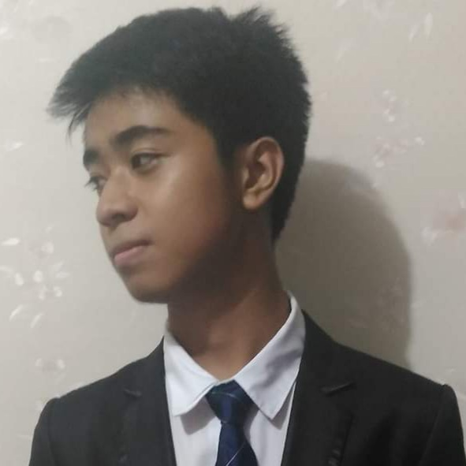

I am studying at the University of the East - Manila, majoring in Computer Science and I like automating menial tasks with passion. Occasionally, design ideas would spark and I would write about them or go straight off designing them on any application I can find. I am inclined to impulse programming but when provided with an interesting project, I plan endlessly.